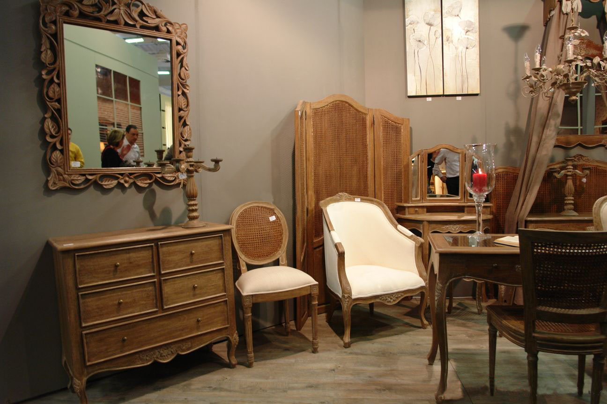

概念
法式风格，指的是法兰西国家的建筑和家具风格。主要包括法式巴洛克风格（路易十四风格）洛可可风格（路易十五风格）新古典风格（路易十六风格）帝政风格等，是欧洲家具和建筑文化的顶峰。按国内市场上的说法，目前在市场上比较流行的别墅建筑风格大致有：中国传统的园林式风格（中式别墅）、北美风情风格（美式别墅）、欧陆传统的贵族风格（欧式别墅）、日式风格（日式别墅）、法式风情风格（法式别墅）。


宫廷风格
艳丽华贵的造型，将王室的豪华气派展现得淋漓尽致，宫廷气息浓烈。闪亮的金箔涂饰，还会有镶嵌、镀金与亮漆，极尽奢华。常常雕刻装饰有希腊的柱头、狮身人面像、罗马神鹫、戴头盔的战士、及与战争有关的题材等，在福溢家居的法式家具系列可以感受这种雕刻细节。椅座及椅背分别有坐垫设计，均以华丽的锦缎织成，以增加乘坐时之舒适感。洛可可风格的法式家具色彩较为柔和，米黄、白色的花纹图案是主色。新古典风格的法式家具，其色彩较偏向暖色系，如原木色。洛可可风格的法式家具，以流畅的线条和唯美的造型著称，带有女性的柔美，最明显的特点就是以芭蕾舞为原型的椅子腿。
休闲风格
乡村田园，装饰雕刻如花、叶、动物、天使脸庞等，还有有玫瑰、水果、叶形、火炬、竖琴、壶，还可能环绕“N”字母的花环、月桂树、花束、丝带、蜜蜂等装饰。整个设计中又凸显出了原汁原味的法式田园乡土气息和浓郁的艺术文化气息，精美细致的手绘做旧图案,配以经典欧式花边线条,使其具有淡淡的历史味却又不乏质地感，给人以无限的想象空间。
新古典风格
简化了繁复的线条和装饰，喜欢用胡桃木、桃花心木、椴木和乌木等，以雕刻、镀金、嵌木、镶嵌陶瓷及金属等装饰方法为主。新古典的线条更为明快，主要以嵌花贴皮呈现质感。

主要特征
1,布局上突出轴线的对称，恢宏的气势，豪华舒适的居住空间。 2,效果贵族风格，高贵典雅。 3,细节处理上运用了法式廊柱、雕花、线条，制作工艺精细考究。 4,建筑多采用对称造型，屋顶上多有精致的老虎窗 5,餐厅秉持典型的法式风格搭配原则，餐桌和餐椅均为米白色，表面略带雕花，配合扶手和椅腿的弧形曲度，显得优雅矜贵，而在白色的卷草纹窗帘、水晶吊灯、落地灯、瓶插百合花的搭配下，浪漫清新之感扑面而来。
设计要素
1、布局上突出轴线的对称，恢宏的气势，豪华舒适的居住空间。 2、贵族风格，高贵典雅。 3、细节处理上运用了法式廊柱、雕花、线条，制作工艺精细考究。 4、点缀在自然中，崇尚冲突之美。
简介
法式家居常用洗白处理与华丽配色，洗白手法传达法式乡村特有的内敛特质与风情，配色以白、金、深色的木色为主调。结构粗厚的木制家具，例如圆形的鼓型边桌，大肚斗柜，搭配抢眼的古典细节镶饰，呈现皇室贵族般的品味。对此，北京硅藻泥小编与您分享“自然硅藻泥系列之法式风格装修搭配”的相关内容，希望对您有所启发。
空间特色
1,布局上突出轴线的对称，恢宏的气势，豪华舒适的居住空间。 2,效果贵族风格，高贵典雅。 3,细节处理上运用了法式廊柱、雕花、线条，制作工艺精细考究。 4,建筑多采用对称造型，屋顶上多有精致的老虎窗 5,法式建筑风格还有一个特点是既对建筑的整体方面有严格的把握，又比较善于在细节的雕琢上下功夫。建筑造型上多采用对称造型，屋顶上一般都会有精致的老虎窗。外立面色彩典雅清新。
色彩运用
秉持典型的法式风格搭配原则，餐桌和餐椅均为米白色，表面略带雕花，配合扶手和椅腿的弧形曲度，显得优雅矜贵，而在白色的卷草纹窗帘、水晶吊灯、落地灯、瓶插百合花的搭配下，浪漫清新之感扑面而来。